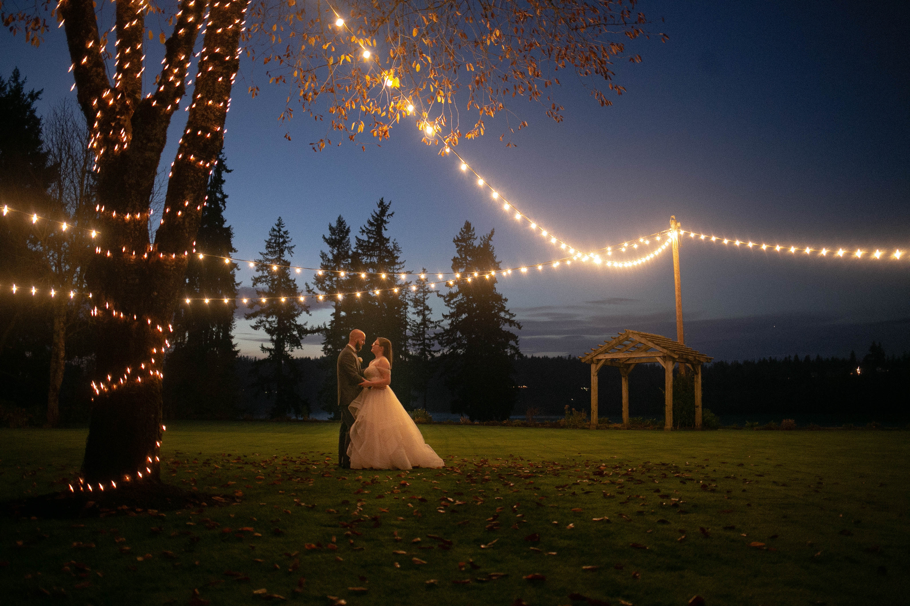
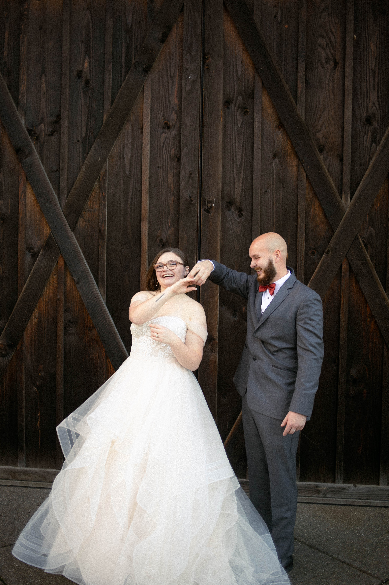
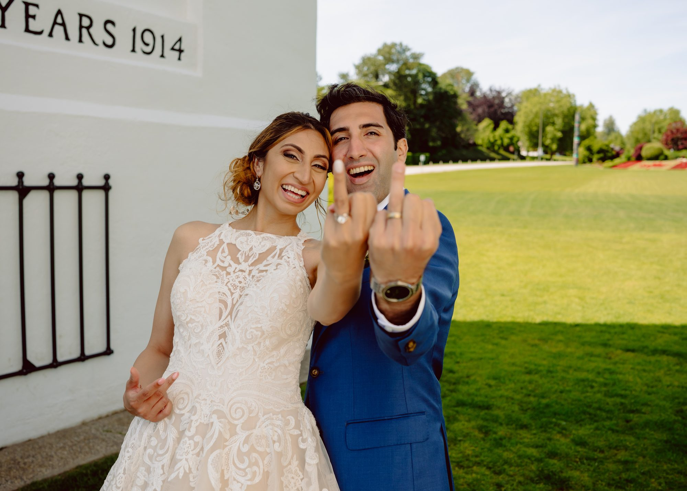
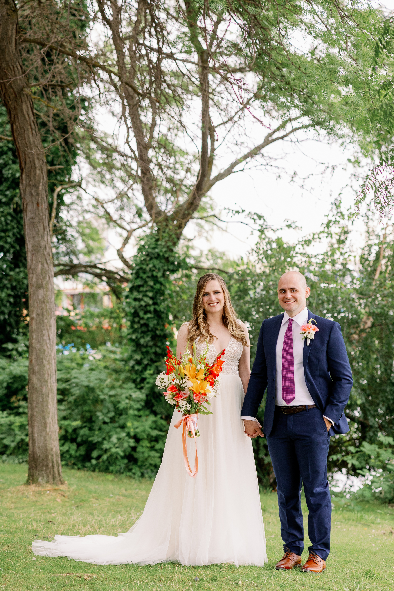

Love notes from clients:

"Paruul was essential to our event. We had all the pieces in place but she coordinated all the vendors, prepared the event time line and kept the event running smoothly. We had no hiccups or problems and it was so worth it. Thank you Paruul! We couldn’t have pulled it off without you."
Devyn + Hunter

"CF did an amazing job planning our border wedding! Paruul took on the challenge and still made the whole process fun! She kept up with the constantly changing covid guidelines and leaned in to making those changes. Paruul helped us navigate all the challenges, kept us under budget and made our day perfectly beautiful by making sure we incorporated elements that showcased who we are as a couple. Thank you!!"
Farah + Malcolm

When it came to our wedding we took a very DIY approach to planning it. But we eventually started realizing just how many tiny details were adding up. We are so glad we made the decision to hire Paruul to be our day-of coordinator. She did a fantastic job of asking questions, setting a timeline, running our rehearsal, and managing different people’s expectations. Even though we used her for day-of coordinator, we appreciated that she set up meetings months before our wedding so we felt prepared and aware of what to expect the week and day of. Our wedding was stress-free and we didn’t have to worry about a thing. Paruul did a great job of working with our other vendors and bringing all the information into a central cohesive place. She is very easy to work with and we are very grateful we had her in our corner during our big day.
Heather + Yarian
"Our wedding day went smoothly all thanks to CF! I made a last minute decision to hire a wedding coordinator and I'm so glad I did. Paruul was amazing - she created a detailed timeline for the day and even joined our rehearsal to make sure the wedding party felt comfortable with how the ceremony would be run. Highly recommend if you're looking for a worry-free day!"
Kelsey + Mark